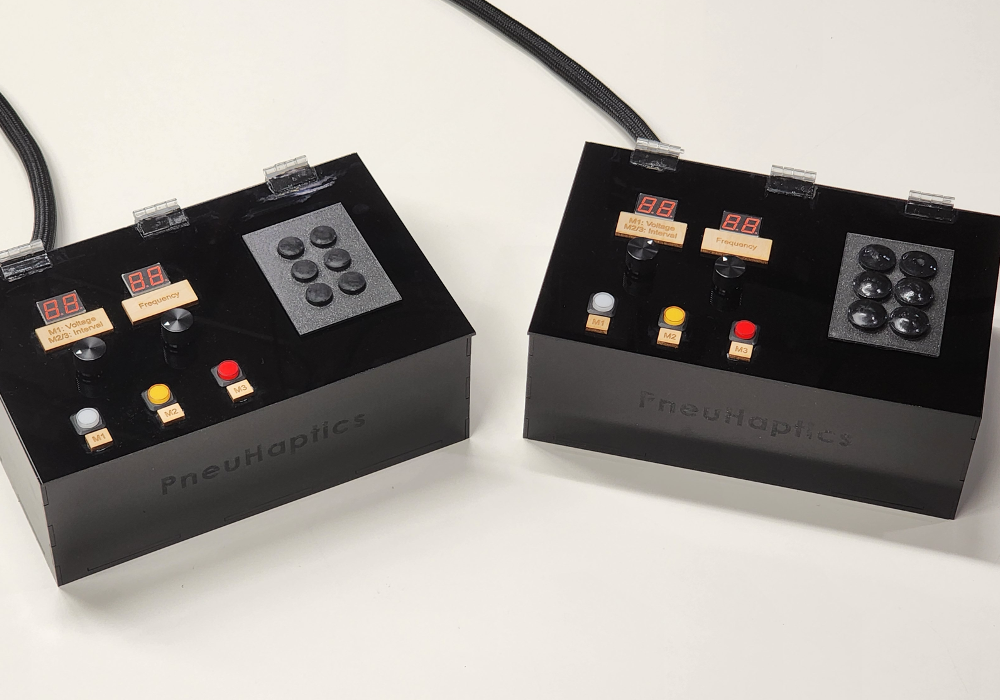

Pneumatactors
Soft, Squishy, Conformable Haptics
Overview
Haptic interface to provide both pressure and vibration to the same location on the skin.
Advisor
Breadth
Timeline
September 2023 to Present
Academic Output
IEEE Haptics Symposium - WIP Paper
IEEE Haptics Symposium - Poster

Background
What are Pneumatactors?
In traditional vibrotactile haptic displays, rigid substrates limit the ability to render realistic tactile experiences. Pneumatic haptic displays offer a promising alternative by providing natural and subtle feedback through soft and conformable interfaces. These interfaces are made from materials that mimic human skin, enhancing the authenticity of haptic feedback. This capability is especially beneficial for applications in virtual reality, prosthetics, and other areas requiring realistic tactile interaction.
Diving Deeper
Implementation and Components
The development of the novel pneumatic vibrotactile display, known as a pneumatactor array, involves several key components and processes. The array consists of six cylindrical pneumatactors fabricated using stereolithography 3D printing with a silicone-based resin. These tactors undergo cleaning and curing processes to achieve structural hardening, resulting in optimized dimensions of an 18mm inner diameter, a 0.4mm diaphragm, and 3mm wall thickness.
Three sets of pneumatactors are controlled by a series of 6V 3-Way Air Valves and a 2.5 l/min 4.5V Air Pump. The valves are configured in a parallel arrangement, allowing for 180° out-of-phase actuation. This setup enables unidirectional air pumping, ensuring efficient inflation and deflation of the pneumatactors.
Taking a Look
Demonstration
To see the pneumatactor array in action, watch our demonstration video showcasing the device's ability to provide high-frequency vibrotactile feedback.

Long Beach, California
IEEE Haptics Symposium
This work was presented at the IEEE Haptics Symposium in sunny Long Beach, California, in April 2024. We showcased a work-in-progress paper and conducted a hands-on demonstration. I also served as a student volunteer at the conference!